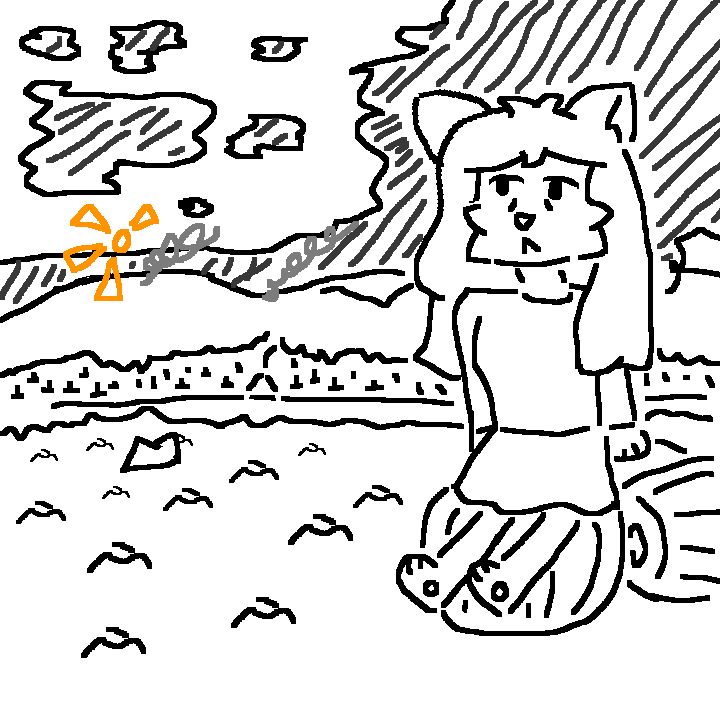

Character Register
What's new?
Updated in 22 Oct 2023
22 Oct 2023

Order to ADA. I mean, to air defense. Yes, here is Ostafan was hired as a soldier of air defense in SN. Also Kevin was, but Ostafan accidently shot to him.
Kevin prepared to Haloween cycle after a 5TH! mind war. He forgot, what in mind, haloween has been banning for a year. Ostafan didn't know that.
Kevin would survive, but a witch what flied with him was disappeared after a shot.
Why is this a forest?
22 Oct 2023

It's drawing is 1st year anniversary of this 🔽

But the main difference is aftermath of 5th mind war. Jania is still alone siting on pumpkin and missing for Kiwuar.